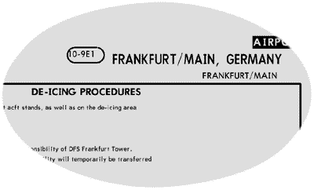

Jeppesen SIMCharts Europe
von Joachim Kroll
Noch bevor der FS 2000 in Deutschland in den Läden
steht, gibt es bereits das erste
"FS-2000-kompatible" Zubehör-Produkt dafür zu
kaufen: Die SIMCharts von Jeppesen. Kunststück -- die
SIMCharts sind zu jedem Flugsimulator kompatibel, weil Sie
mit dem Simulator selbst genauso viel oder wenig zu tun
haben wie gedruckte Karten. Wie die Qualität der Karten
ist und welche Flughäfen in der Ausgabe
"Europe" drin sind und welche nicht, lest ihr
hier.
Die Freiheit am Himmel ist keineswegs grenzenlos. Nicht
einmal im Straßenverkehr herrschen so strenge Regeln wie
im Luftverkehr. Für jeden Flughafen gibt es Karten mit
genau festgelegten An- und Abflugrouten. Die Abflugroute
heißt SID (Standard Instrument Departure) und die
Anflugroute STAR (Standard Terminal Arrival Route).
Zusätzlich gibt es für jede Landebahn i.d.R. zwei
ILS-Landekarten, auf denen die genaue Ausrichtung der
Piste, das Sinkprofil, die Marker u.a. für den Endanflug
verzeichnet sind. Alle diese Karten sind Gegenstand der
SIMChart-CDs von Jeppesen. Diese CDs gibt es für die
verschiedenen Kontinente der Welt. Da ich mir nur die
Europa-CD gekauft habe, beschränke ich mich hier auf
diese.
Für den Streckenflug gibt es sog. Enroute-Charts,
jeweils in einer Version für low altitude und high
altitude. Dort sind die Luftstraßen unter- und oberhalb
24500 ft. (Deutschland; diese Grenze variiert von Land zu
Land etwas) verzeichnet. Diese stadtplangroßen Karten
befinden sich nicht auf der CD, es gibt aber ein Bundle
mit gedruckten Enroute-Charts zu kaufen. Für alle, die
die Europe-1- oder 1-Pro-Szenerie legal erworben haben,
tut's die CD allein, da die Enroute-Charts im
Europe-1-Paket enthalten sind.
Das Programm
Die Installation der SIMCharts vollzieht sich
dialoggeführt und unkompliziert. Die CD enthält ca. 100
Mbyte Daten. Wer nicht bei jedem Blick in die Karten die
CD einlegen möchte, muß diese 100 Mbyte aus dem "Charts"-Verzeichnis
der CD in das Unterverzeichnis "DemoCharts" des
Viewer-Programms kopieren. Das Installationsprogramm
übernimmt diesen Kopiervorgang nicht.
Der Viewer besteht aus drei Fenstern: der
Airport-Liste, der Chart-Liste und dem eigentlichen
Kartenfenster. In die Airport-Liste gibt man entweder
einen Städtenamen oder das ICAO-Kürzel ein. In der
Chart-Liste erscheinen dann die für den Flughafen
vorhandenen Charts. Das können zwischen zwei (z. B.
Jever) und 39 Charts (z. B. Amsterdam) pro Flughafen sein.
Leider läßt sich das Kartenfenster nicht nach
Windows-Standard bedienen: vergrößert man die Karte,
erscheinen keine Bildlaufleisten. Stattdessen muß man mit
der Maus an die Kartenränder klicken, um den
Kartenausschnitt zu bewegen -- umständlich. Die
Darstellung auf dem Bildschirm ist auch nicht besonders
gut lesbar, da keine Graustufen dargestellt werden (Bild
1). Die volle Qualität erhält man erst beim Drucken:
hier werden die Karten mit der maximalen Auflösung des
Druckers ausgegeben (Bild 2), seitenfüllend in DIN A4.
Dann sehen die Karten aber auch wirklich wie
Jeppesen-Charts aus, denn alle Schriften etc. haben das
originale Erscheinungsbild. Sofern es sich um hügeliges
Terrain handelt, sind die Karten auch farbig, wie Bild 3
zeigt.
Was ist drauf?
Die CD enthält Kartenmaterial für 390 Flughäfen. Das
klingt zunächst sehr imposant, relativiert sich aber
schnell wenn man bedenkt, daß es 43 europäische Länder
gibt -- wenn ich richtig gezählt habe. Egal, auch wenn's
nur 39 Länder wären, so sind das statistisch gesehen nur
10 Flughäfen pro Land, die abgedeckt sind.
Zunächst sind natürlich alle großen
Verkehrslandeplätze enthalten. Auch kleinere deutsche
Flughäfen wie Westerland, Heringsdorf, Hahn oder Lahr
habe ich gefunden. Ebenso enthalten sind einige frühere
Militärbasen wie Ramstein oder Ingolstadt.
Regionalflughäfen wurden aber offensichtlich nach dem
Zufallsprinzip ausgewählt: Friedrichshafen ist drin,
Augsburg und Mönchengladbach sind nicht drin.
Was ist nicht drauf?
Am besten ist Frankreich vertreten mit 72 Flughäfen --
wohl um den Zorn der Franzosen zu besänftigen, daß es
sich hier um ein englischsprachiges Produkt handelt. Auch
Deutschland ist mit 42 Airports noch gut vertreten. Unsere
Freunde aus Österreich und der Schweiz blicken dagegen an
so einigen Orten in die Röhre. In Österreich finden wir
Graz, Innsbruck, Klagenfurt, Linz, Salzburg und Wien. Die
Schweizer Flughäfen besteht in der Jeppesen-Welt nur aus
Zürich, Genf und Sion. Bern oder Altenrhein: Fehlanzeige.
Die Länder des ehemaligen Ostblocks incl. des
europäischen Teils Rußlands fehlen komplett. Die
europäische Einigung ist offensichtlich schon weiter
vorangeschritten als in den USA bekannt ist.
Während die SIMChart-Europe-Grenze im Osten ganz klar
entlang des früheren Eisernen Vorhangs verläuft (mal
abgesehen von den neuen Bundesländern), ist die
Westgrenze unklar. Grönland und die Kanarischen Inseln
gehören politisch beide zu Europa, geografisch jedoch zu
Amerika bzw. Afrika. Von Grönland sind zwei Flughäfen
enthalten (Søndre Strømfjord und Thule), von den
Kanarischen Inseln hingegen nichts.
Ich bin zwar kein Pilot, aber das Datenmaterial der
SIMCharts kommt mir recht aktuell vor -- kaum älter als
ein Jahr. Z. B. für München und Frankfurt enthalten die
ILS-Anflugkarten die RNAV-Waypoints -- ein
Anflugverfahren, das man mit dem FS 98 überhaupt nicht
simulieren kann, es sei denn, es findet sich mal jemand,
der alle Wegpunkte für EFIS 98 eintippt. Im FS 2000
sollen aber alle diese Punkte in der Datenbank enthalten
sein.
Fazit
Für ernsthafte IFR-Flieger sind die SIMCharts ein
überaus nützliches Werkzeug. Da die Karten von den
Flugsicherungsbehörden quartalsweise aktualisiert werden
veralten sie zwar schnell, aber für Simulationszwecke
kann man sie länger nutzen als jeden Simulator. Für den
praktischen "Flugbetrieb" ist es unbedingt
empfehlenswert, sich die Karten auszudrucken, die man
braucht. Wer die CD kauft, sollte aber nicht denken
"jetzt habe ich die Karten von allen europäischen
Flughäfen". Trotzdem dürfte das enthaltene
Kartenmaterial den weitaus größten Teil populärer
Simulationsstrecken abdecken.
Joachim Kroll

Bild1: Original-Jeppesen-Schriften, aber auf dem
Bildschirm nicht optimal lesbar

Bild 2: Erst nach dem Drucken kann man die Karten in
höchster Auflösung betrachten -- hier mit dem Adobe
Distiller in eine PDF-Datei gedruckt.

Bild 3: Besonders schön anzusehen sind die farbigen
Karten, die bei berigem Gelände vorhanden sind. Hier
Catania mit dem Ätna.
Tabelle: Länder und Anzahl der Flughäfen in den
SIMCharts Europe.


{kind=link}